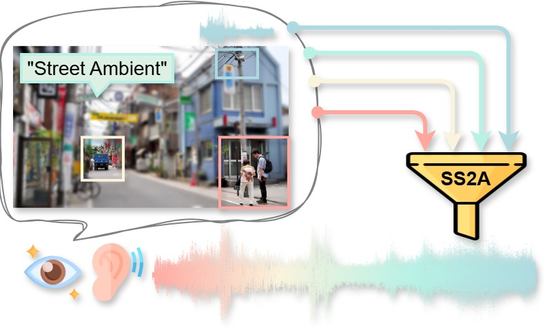
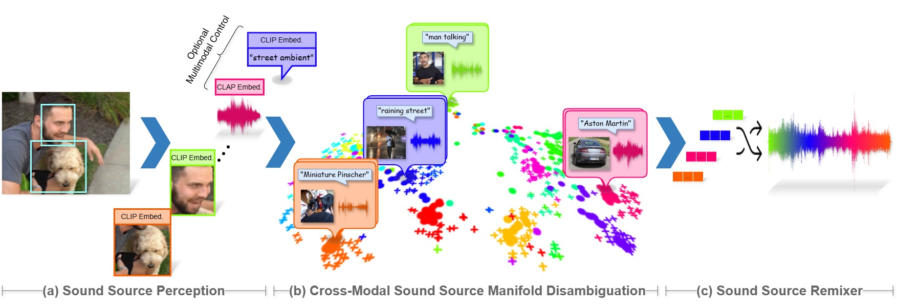
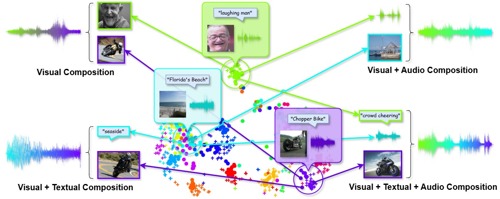

Gotta Hear Them All: Sound Source-Aware Vision to Audio Generation

We present SSV2A, a sound source-aware vision-to-audio method that generates high-quality audio clips given a still image or silent video. Besides quality, we also demonstrate the intuitive contrability offered by our pipeline in flexibly composing multimodal sound source prompts from text, vision and audio as generation conditions.
For best experience, please wear headphones and zoom in to examine the samples in Firefox or Chrome. We welcome you to play directly with SSV2A via our demo link. Have fun!
*Please refresh the demo page if you have access issues. Our pages are strictly for research purposes. We do not track your identity and we do not keep any of your uploaded or generated data in any of our applications.
Abstract
Vision-to-audio (V2A) synthesis has broad applications in multimedia. Recent advancements of V2A methods have made it possible to generate relevant audios from inputs of videos or still images. However, the immersiveness and expressiveness of the generation are limited. One possible problem is that existing methods solely rely on the global scene and overlook details of local sounding objects (i.e., sound sources). To address this issue, we propose a Sound Source-Aware V2A (SSV2A) generator. SSV2A is able to locally perceive multimodal sound sources from a scene with visual detection and cross-modality translation. It then contrastively learns a Cross-Modal Sound Source (CMSS) Manifold to semantically disambiguate each source. Finally, we attentively mix their CMSS semantics into a rich audio representation, from which a pretrained audio generator outputs the sound. To model the CMSS manifold, we curate a novel single-sound-source visual-audio dataset VGGS3 from VGGSound. We also design a Sound Source Matching Score to measure localized audio relevance. This is the first work to address V2A generation at the sound-source level. Extensive experiments show that SSV2A surpasses state-of-the-art methods in both generation fidelity and relevance. We further demonstrate SSV2A's ability to achieve intuitive V2A control by compositing vision, text and audio sound sources.
Image-to-Audio Generation
Given an image, SSV2A generates audio clips based on the detected visual audio sources with high fidelity and relevance. We demonstrate our method's generation results against baselines here.
Video-to-Audio Generation
Given a video of arbitrary length, SSV2A can generate a highly immersive audio clip to accompany it.
Generation Control - Multimodal Sound Source Composition
SSV2A supports multimodal sound source composition. This means you can supply any source prompts as text, vision or audio, and mix them together to generate audio contents. In this section, we demonstrate the high controllability our method can achieve in various usage scenarios.
Visual Composition
By combining visual sources, you can synthesize audio clips tailored to the desired generation result.
Visual + Textual Composition
With multimodal source composition, you can generate audio clips from visual sources with fine-grained textual style control.
Visual + Audio Composition
You can also compose audio clips with audio sources as conditions. However, SSV2A is not as sensitive to audio conditions as visual/text sources because it ignores the CLIP semantics for audio modality.
Visual + Text + Audio Composition
Putting it altogether, SSV2A supports a wide range of audio sysnthesis controls with multimodal prompts.

Comparison with Cascaded Composition
The most straightforward way to composite multimodal sound sources into a single audio is to generate an audio track for each source condition via video-to-audio or text-to-audio models and overlay them together. However, such a cascading audio synthesis system lacks interaction, context and style awareness when integrating multiple sound sources, which are keys to a convincing audio scene. We show with qualitative examples in this section that our SSV2A composition achieves these features.
Interaction Awareness
We generate a drum-only audio clip and a bass-only clip with SSV2A. Simply overlaying these clips yields a mixed track with no instrument interactions. With our SSV2A composition, we are able to generate an appealing piece of drum-bass music with rich interactions.
Context Awareness
We generate an audio clip of a talking man and another clip of police activities. The cascaded composition yields chaotic sounds as the police event context is not perceived. Our SSV2A composition successfully picks up this global cue and generates a police officer's voice followed by a gun loading/shooting sound to indicate police events.

Style Awareness
We generate audio clips of a normal speech and an academic conference talk. Cascaded composition synthesizes an audio track with conflicting talkers and no conference room reverb. Our SSV2A composition transfers the speech style into a proper academic presentation with reverb.

Disclaimers
All media contents in this page are extracted from Internet with their Creative Commons License confirmed. As our work is anonymized due to a conference submission, please wait until further notice if you want to raise a copyright issue. We will respond as soon as possible and take according actions.
Attribution for the site icon: Festival animated icons created by Freepik - Flaticon.